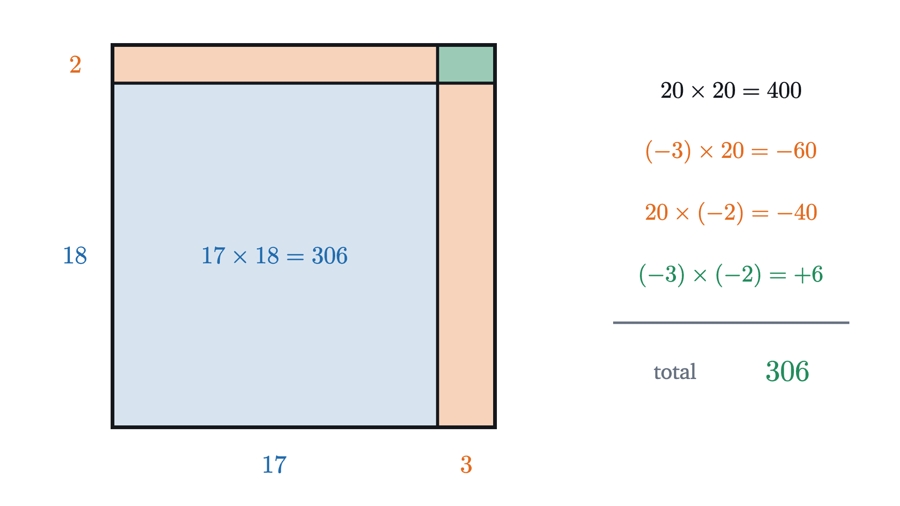

Why is a negative times a negative positive?
Multiplying by a negative number flips the number line about zero, and two flips cancel. We see it, then prove it from the distributive law.
You were told at some point that $(-2) \times (-3) = 6$, and you have used the fact ever since. Suppose a twelve-year-old asks you why the answer is not $-6$. Two negative numbers went in, and it seems odd that a positive number should come out, especially since adding two negative numbers gives something even more negative.
Most people can only answer “that is the rule”. The rule is correct, and this lesson gives three reasons for it: a picture of what multiplication does to the whole number line, a pattern in the multiplication table, and a proof that no other answer is possible once we agree on a few laws of arithmetic that nobody wants to give up. The proof settles the matter, and the picture and the pattern are there so that it does not come as a surprise.
Multiplying stretches the number line
Start with multiplications nobody argues about: two times three is six, and two times a half is one. Even $2 \times (-3)$ is uncontroversial, because it means two copies of $-3$ added together, and $(-3) + (-3) = -6$.
Now change the question slightly. Ask what multiplying by 2 does to every number at once, and draw the answer. In the figure below there are two copies of the number line. A dot starts at each whole number from $-3$ to $3$ on the top line, and a line joins it to the place on the bottom line where the multiplication sends it. Blue marks the numbers that start to the right of zero and orange the ones that start to the left. The thick blue line follows the number 2.
Multiplying by 2 sends each number to the point twice as far from zero, on the same side of zero that it started on. The dots spread apart evenly, so the picture looks like a rubber band being stretched with the point at zero pinned in place. Multiplying by $\frac12$ pulls every number in to half its distance, which is the same rubber band being allowed to shrink. In both cases zero is the only number that does not move, because $2 \times 0 = 0$ and $\frac12 \times 0 = 0$.
It helps to think of the multiplier as the setting on a dial. At 1 nothing moves. Above 1 the line is stretched away from zero, and between 0 and 1 it is squeezed toward zero. For a general multiplier $k$, the dot that starts at $x$ sits at $kx$.
Turning the multiplier below zero
We have tried the dial at 2, at 1 and at $\frac12$. Keep turning it down. At 0 every number is sent to 0, which agrees with the familiar fact that anything times zero is zero: on the picture, all seven joining lines meet at a single point.
Nothing about a dial says it has to stop there. The question is what the picture should look like when the dial reads $-1$.
Pause and try
Follow the dot that starts at 2. With the multiplier at 2 it sat at 4, at 1 it sat at 2, at $\frac12$ it sat at 1, and at 0 it sits at 0. Where should it be when the multiplier reaches $-1$? Then answer the same question for the dot that starts at $-2$.
Show answerHide answer
The dot that starts at 2 sits at $2k$ when the multiplier is $k$, so each time the multiplier drops by 1 the dot moves 2 to the left: $4, 2, 0$. One more step to the left puts it at $-2$. The dot that starts at $-2$ sits at $-2k$ and has been moving to the right the whole time: $-4, -2, 0$. One more step puts it at $+2$.
Each dot was moving steadily toward zero as the multiplier fell, and when the multiplier passed zero the dot kept going and came out on the opposite side. With the multiplier at $-1$, the dot from 2 is at $-2$ and the dot from $-2$ is at 2. Every number has changed places with its mirror image across zero. So multiplying by $-1$ flips the number line about zero.
Look at what the flip did to the orange dots, the ones that began on the negative side: they are now on the positive side. A flip sends each number to the side it was not on, so a number that is already negative comes back to the positive side. That observation answers the opening question, and the rest of the lesson makes it precise.
A multiplier such as $-2$ does both jobs at once, because $-2$ is $2$ followed by a flip: every number is sent to twice its distance from zero, on the opposite side.
The product $(-2) \times (-3)$, one step at a time
With that picture, the product $(-2) \times (-3)$ is a question about a single dot: where does multiplying by $-2$ send the number $-3$? Step through it.

The number $-3$ starts three units to the left of zero. Stretching by 2 moves it to six units left of zero, and flipping carries it to six units on the right.
Two flips cancel
There is a shorter way to say the same thing. The number $-3$ is itself a flipped 3, because $-3 = (-1) \times 3$, and likewise $-2 = (-1) \times 2$. So the product $(-2) \times (-3)$ contains a stretch by 2, a stretch by 3 and two flips. The stretches account for the 6. The figure shows what the two flips do together.
The second flip undoes the first, and every number ends where it began. A multiplication that leaves every number alone is multiplication by 1, so $(-1) \times (-1) = 1$. Turning around twice leaves you facing the way you started for the same reason.
The same count handles longer products. Three negative factors make three flips, which leave the line flipped, so the product is negative. Four make a positive product again. What matters is whether the number of negative factors is even or odd.
The same answer from a pattern
You may not fully trust the picture yet, and you would have a point. I chose to continue the dial below zero in the smoothest possible way, and that was a choice. So here is a second argument that uses only multiplications you already accept.
Take the products $3 \times (-2)$, $2 \times (-2)$ and $1 \times (-2)$. Each one is repeated addition: three copies of $-2$ make $-6$, two copies make $-4$, and one copy is $-2$. Zero copies of $-2$ make 0. Listing them in order gives
Each time the first factor goes down by 1, the product goes up by 2. The reason is that lowering the first factor by 1 removes one copy of $-2$ from the sum, and removing a $-2$ from a sum raises the sum by 2.
Pause and try
The table so far reads $3 \times (-2) = -6$, $2 \times (-2) = -4$, $1 \times (-2) = -2$, $0 \times (-2) = 0$. If the pattern continues, what are the next three rows, $(-1) \times (-2)$, $(-2) \times (-2)$ and $(-3) \times (-2)$?
Show answerHide answer
Each row is 2 more than the one before, so the next three products are $2$, $4$ and $6$. In particular the pattern needs $(-1) \times (-2) = 2$ and $(-3) \times (-2) = 6$.
For the pattern to continue, $(-1) \times (-2)$ has to be 2 and $(-3) \times (-2)$ has to be 6. Plotted, the seven products fall on one straight line, and a rule that made negative times negative come out negative would bend that line sharply at zero.
Why no other answer is possible
A pattern can break, though, and so far nothing forbids a stubborn person from declaring that $(-1) \times (-2) = -2$ and accepting the bend in the graph. What forbids it is a law of arithmetic that you rely on every time you multiply in your head. To work out $4 \times 13$ you split 13 into $10 + 3$ and add the pieces, $4 \times 10 + 4 \times 3 = 52$. In symbols this is the distributive law:
We will now ask what this law says about the smallest possible case, $(-1) \times (-1)$, and the trick is to feed it a sum that we know is zero. We know that $1 + (-1) = 0$, and we know that anything times zero is zero, so
The distributive law lets us multiply out the left side term by term, which gives
The first product is $-1$, since one copy of $-1$ is $-1$. So the equation reads
Read that as a statement about the unknown quantity $(-1) \times (-1)$: it is a number which, added to $-1$, gives 0. Only one number does that, and it is 1. Therefore $(-1) \times (-1) = 1$, with no freedom left.
Pause and try
Run the same argument for $(-2) \times (-3)$. Start from $(-2) \times \bigl(3 + (-3)\bigr)$, which is $(-2) \times 0 = 0$, and multiply it out. You may use the fact that $(-2) \times 3 = -6$.
Show answerHide answer
Multiplying out gives $(-2) \times 3 + (-2) \times (-3) = 0$, that is, $-6 + (-2) \times (-3) = 0$. The only number that can be added to $-6$ to give 0 is 6, so $(-2) \times (-3) = 6$.
We have reached the original question again, and this time 6 was the only value that lets the distributive law hold.
The precise statement and its proof
The argument above used three ingredients: that anything times zero is zero, that $(-2) \times 3 = -6$, and the distributive law. A careful treatment should say exactly what is assumed and derive everything else, including those first two ingredients. This section does that.
The assumptions are the basic laws of arithmetic. They hold for the whole numbers, fractions and decimals you already compute with, and they are taken to hold for all real numbers, negative ones included. In each line, $a$, $b$ and $c$ stand for any numbers.
| Law | What it says |
|---|---|
| Order does not matter | $a + b = b + a$ and $a \times b = b \times a$ |
| Grouping does not matter | $(a + b) + c = a + (b + c)$ and $(a \times b) \times c = a \times (b \times c)$ |
| Zero and one do nothing | $a + 0 = a$ and $1 \times a = a$ |
| Opposites exist | for each $a$ there is a number $-a$ with $a + (-a) = 0$ |
| Distributive law | $a \times (b + c) = a \times b + a \times c$ |
The fourth law is where negative numbers enter, and it is also where the minus sign gets its meaning.
On the number line, $-a$ is the mirror image of $a$ across zero, which is the flip from earlier. Note that $-a$ need not be a negative number. If $a = -4$, then $-a = 4$, because $-4 + 4 = 0$.
Three short facts follow from the laws, and the theorem rests on them.
Fact 1: a number has only one opposite. Suppose $a + x = 0$ and also $a + y = 0$. Then $x = y$.
This is the fact we used when we said “only one number added to $-1$ gives 0”.
Fact 2: anything times zero is zero. For every number $a$, $a \times 0 = 0$.
Fact 3: an opposite can be moved outside a product. For all numbers $a$ and $b$, $(-a) \times b = -(a \times b)$. In words, $(-a) \times b$ is the opposite of $a \times b$.
With $a = 2$ and $b = 3$, Fact 3 says $(-2) \times 3 = -6$, the ingredient we borrowed in the last section.
Each clause of the theorem matches something from the pictures. “For all real numbers” means the result is not restricted to whole numbers: $(-1.5) \times (-2.5) = 3.75$ by the same proof. Taking $a = b = 1$ gives $(-1) \times (-1) = 1$, the two flips. And the picture of two flips was itself a use of the laws, because doing $\times (-1)$ twice to a number $x$ produces $(-1) \times \bigl((-1) \times x\bigr)$, which the grouping law rewrites as $\bigl((-1) \times (-1)\bigr) \times x = 1 \times x = x$.
Negative numbers were introduced by people, and people had to decide how to multiply them. The decision was to keep the laws in the table, because those laws are what make calculation work. The theorem shows that once the laws are kept there is nothing further to decide.
What goes wrong with any other rule
The distributive law is the hypothesis doing the work, and we can see this by dropping it. Suppose someone insists that a negative times a negative is negative, so that $(-1) \times (-1) = -1$, while keeping every other product the same. Compute $(-1) \times \bigl(1 + (-1)\bigr)$ in two ways under their rule. Adding inside the brackets first gives $(-1) \times 0 = 0$. Multiplying out first gives $(-1) \times 1 + (-1) \times (-1) = -1 + (-1) = -2$. The two answers disagree, so in their system the distributive law is false.
There is one edge case in the theorem itself, which is zero. If $a = 0$ then $-a = 0$ as well, and the theorem reads $0 \times (-b) = 0 \times b$, which is true because both sides are 0. Zero is neither positive nor negative, so the slogan “negative times negative is positive” does not mention it, but the theorem covers it.
Checking the rule against area
You might still wonder whether laws chosen by people give answers that agree with things you can count. Here is a test. The rectangle below is 10 squares wide and 7 squares tall. Cut a strip of width 2 off the right side and a strip of height 3 off the top. What remains is 8 by 4, which is 32 squares, and you can count them.
Now compute the same thing as $(10 - 2) \times (7 - 3)$, removing each strip from the full area of 70. The strip on the right has $2 \times 7 = 14$ squares and the strip along the top has $10 \times 3 = 30$.
Pause and try
Subtracting both strips from the whole gives $70 - 14 - 30 = 26$. The remaining rectangle has 32 squares. Where did the missing 6 go? Decide before stepping through the figure.
Show answerHide answer
The two strips overlap in the top right corner, a 2 by 3 block of 6 squares. Subtracting both strips removes that block twice, although it was only there once. Adding it back once gives $26 + 6 = 32$.
Compare this with what the distributive law does to the same product. Writing $10 - 2$ as $10 + (-2)$ and $7 - 3$ as $7 + (-3)$ and multiplying out gives four products:
The first three are $70$, $-14$ and $-30$, which add to 26. The true answer is 32, because we counted it. So the fourth term must contribute $+6$. That term is $(-2) \times (-3)$, and in the picture it is the corner being put back after it was taken away twice. If negative times negative were $-6$, this calculation would report $70 - 14 - 30 - 6 = 20$ squares in a rectangle that visibly has 32.
Worked examples

Common mistakes
What about the debt story?
A common explanation uses money. Owing $2 is recorded as $-2$. If you owe $2 to each of three friends, your position is $3 \times (-2) = -6$. Now suppose the three friends cancel those debts. Taking away three debts of $2 is written $(-3) \times (-2)$, and you are $6 better off, so the product is $+6$.
The story gives the right answer and is a good way to remember the rule, but as an explanation it only half works. It reads the two negative numbers in different ways: $-2$ is an amount owed, while $-3$ is an act of removing. So it has to assume that “removing three things” should be written as multiplying by $-3$, which is very close to the rule we were trying to justify. It also has nothing to say when neither number is a count, as in $(-1.5) \times (-2.5)$. The number line picture avoids both problems, because the multiplier is always a stretch with or without a flip and the other number is always a position.
Stepping back
The difficulty at the start was that “three copies of” gives multiplication its meaning for positive whole numbers and gives no meaning at all to “minus three copies of”. We got around this in two ways. For the picture, we stopped thinking of multiplication as repeated addition and thought of it as something done to the whole number line, which continues naturally below zero. For the proof, we asked what the laws that already hold for positive numbers would force if they were kept.
That second move recurs whenever an operation is extended to new kinds of numbers: the new values are chosen so that the old laws survive, and often there is then no choice left. The same reasoning explains why $x^0 = 1$ and what a negative exponent means.
The distributive law carried this whole lesson, and the rectangle with its corner counted twice is one case of a general picture. The next lesson, the distributive law as a picture, develops it.
Check yourself
What is $(-3) \times (-4) \times (-2)$?
Problems
Problem 1
Compute each product: (a) $(-6) \times (-5)$, (b) $(-6) \times 5$, (c) $(-1) \times (-1) \times (-1)$, (d) $(-0.5) \times (-8)$.
Show solutionHide solution
Find the size and count the negative factors.
(a) Size $6 \times 5 = 30$, two negative factors, so $30$.
(b) Size 30, one negative factor, so $-30$.
(c) $(-1) \times (-1) = 1$, and $1 \times (-1) = -1$. Three flips leave the line flipped.
(d) Size $0.5 \times 8 = 4$, two negative factors, so $4$.
Problem 2
Think of multiplying by $-3$ as a stretch and a flip of the number line. (a) Where does it send the number $-4$? (b) Which number does it send to $-15$? (c) Which multiplier sends $-5$ to $20$?
Show solutionHide solution
(a) Stretching by 3 sends $-4$ to $-12$, and the flip sends $-12$ to $12$. So $(-3) \times (-4) = 12$.
(b) We need $x$ with $(-3) \times x = -15$. The size of $x$ is $15 \div 3 = 5$. The result is on the negative side after one flip, so $x$ started on the positive side: $x = 5$. Check: $(-3) \times 5 = -15$.
(c) We need $k$ with $k \times (-5) = 20$. The stretch is $20 \div 5 = 4$. The number $-5$ starts on the negative side and ends on the positive side, so there is a flip: $k = -4$. Check: $(-4) \times (-5) = 20$.
Problem 3
Expand $-2(3 - x)$ and check your answer at $x = 5$.
Show solutionHide solution
Write $3 - x$ as $3 + (-x)$. Then
The second term uses the theorem with $a = 2$ and $b = x$.
Check at $x = 5$: the original is $-2(3 - 5) = (-2) \times (-2) = 4$, and the expansion is $-6 + 2 \times 5 = 4$.
Problem 4
The temperature in a town has been falling by 2 degrees every hour, and right now it is 0 degrees. Treat the rate of change as $-2$ degrees per hour and a time three hours ago as $-3$ hours. Use rate times time to find the temperature three hours ago, and explain why the sign of the answer makes sense.
Show solutionHide solution
Temperature now is 0, and the temperature at time $t$ hours is $(-2) \times t$. At $t = -3$ this is $(-2) \times (-3) = 6$ degrees.
The sign makes sense because the temperature has been falling: three hours ago it must have been higher than it is now, by 2 degrees for each of the three hours.
Problem 5
Without computing the full product, decide the sign of each. Then compute it. (a) $(-2) \times (-3) \times (-1) \times (-5) \times (-1)$. (b) $(-1)^{100}$. (c) $(-1)^{101}$.
Show solutionHide solution
Each negative factor is one flip, and flips cancel in pairs.
(a) There are five negative factors. Four of them cancel in pairs and one flip is left, so the product is negative. The size is $2 \times 3 \times 1 \times 5 \times 1 = 30$, so the product is $-30$.
(b) One hundred factors of $-1$ form fifty pairs, and each pair multiplies to 1, so $(-1)^{100} = 1$.
(c) $(-1)^{101} = (-1)^{100} \times (-1) = 1 \times (-1) = -1$.
In general $(-1)^n$ is $1$ when $n$ is even and $-1$ when $n$ is odd.
Problem 6
Compute $19 \times 28$ by writing it as $(20 - 1)(30 - 2)$ and multiplying out. Which of the four terms uses the rule for a negative times a negative, and what part of a rectangle picture does it correspond to?
Show solutionHide solution
Multiplying out,
The last term, $(-1) \times (-2) = +2$, uses the rule. In a 20 by 30 rectangle with a strip of width 1 removed from one side and a strip of height 2 removed from another, the two strips overlap in a 1 by 2 corner. Subtracting both strips removes that corner twice, and the $+2$ puts it back once.
Check: $19 \times 28 = 20 \times 28 - 28 = 560 - 28 = 532$.
Problem 7
(a) Is $-a$ always a negative number? Give an example. (b) Using only the definition of the opposite and Fact 1, prove that $-(-a) = a$ for every number $a$.
Show solutionHide solution
(a) No. The symbol $-a$ means the opposite of $a$. If $a = -4$ then $-a = 4$, which is positive, and if $a = 0$ then $-a = 0$.
(b) By definition, $-(-a)$ is the opposite of $-a$, that is, the number which gives 0 when added to $-a$. But $a$ is such a number, because $-a + a = a + (-a) = 0$. By Fact 1 a number has only one opposite, so $-(-a) = a$. On the number line this says that reflecting twice across zero returns a point to where it started.
Problem 8
Show that the square of any nonzero real number is positive. Conclude that no real number $x$ satisfies $x^2 = -4$.
Show solutionHide solution
Let $x$ be a nonzero real number. There are two cases.
If $x$ is positive, then $x^2 = x \times x$ is a product of two positive numbers, which is positive. (That positive times positive is positive is a basic property of the ordering of the real numbers. It is not one of the laws in our table, and we take it as given.)
If $x$ is negative, write $x = -a$ where $a$ is positive. By the theorem, $x^2 = (-a) \times (-a) = a \times a$, which is positive.
So $x^2 > 0$ whenever $x \ne 0$, and $0^2 = 0$. In every case $x^2$ is at least 0, so it can never equal $-4$. (Making sense of square roots of negative numbers requires new numbers beyond the real line.)
Problem 9
Division is defined through multiplication: $p \div q$ is the number $r$ for which $r \times q = p$ (with $q \ne 0$). Use this to find $(-12) \div (-3)$, and then show in general that $(-a) \div (-b) = a \div b$ when $b \ne 0$.
Show solutionHide solution
We need the number $r$ with $r \times (-3) = -12$. Try $r = 4$: by Fact 3 (with the order of the factors swapped), $4 \times (-3) = -(4 \times 3) = -12$. So $(-12) \div (-3) = 4$.
In general, let $r = a \div b$, which means $r \times b = a$. We claim this same $r$ is $(-a) \div (-b)$, and to verify the claim we must check that $r \times (-b) = -a$. By Fact 3, $r \times (-b) = -(r \times b) = -a$. So $(-a) \div (-b) = r = a \div b$.